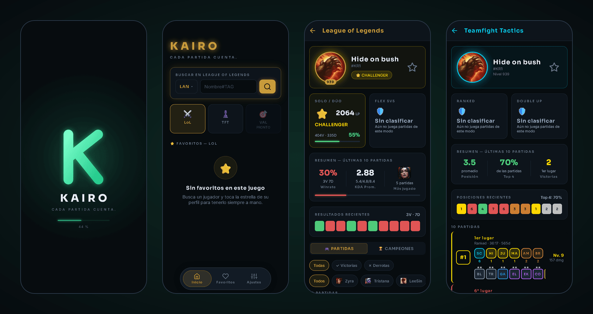
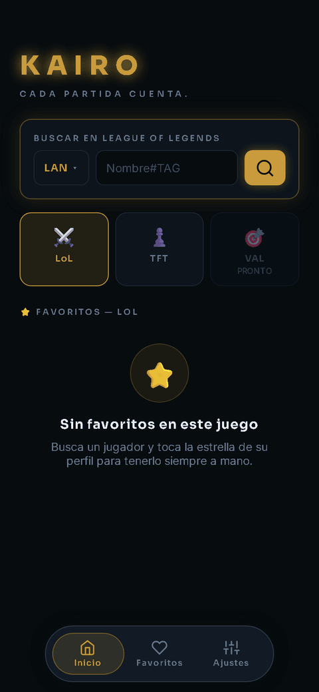
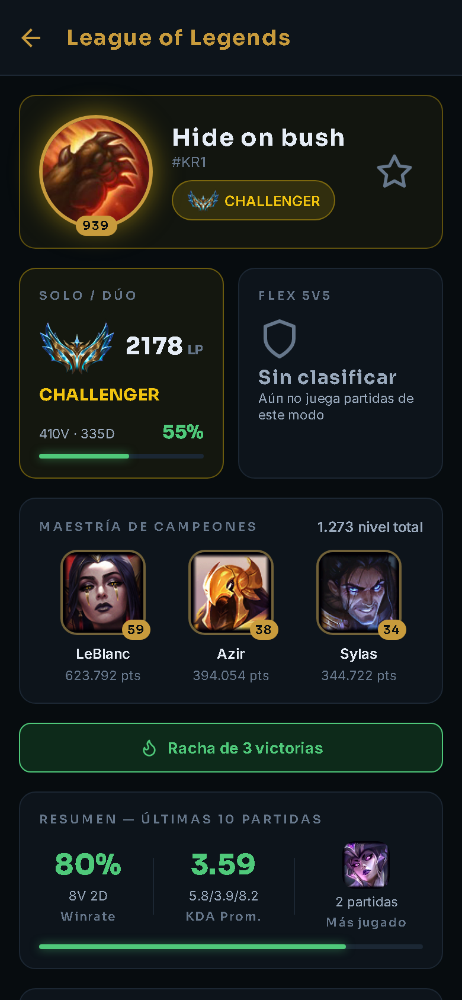
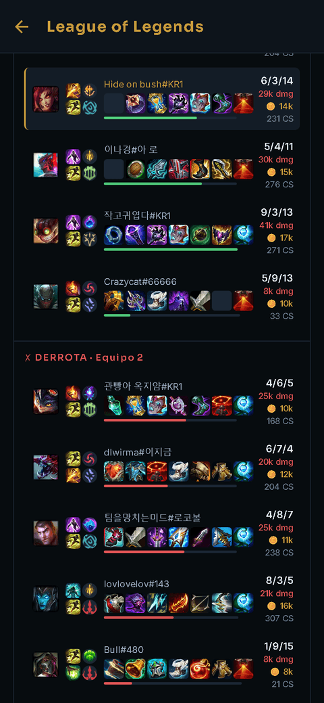
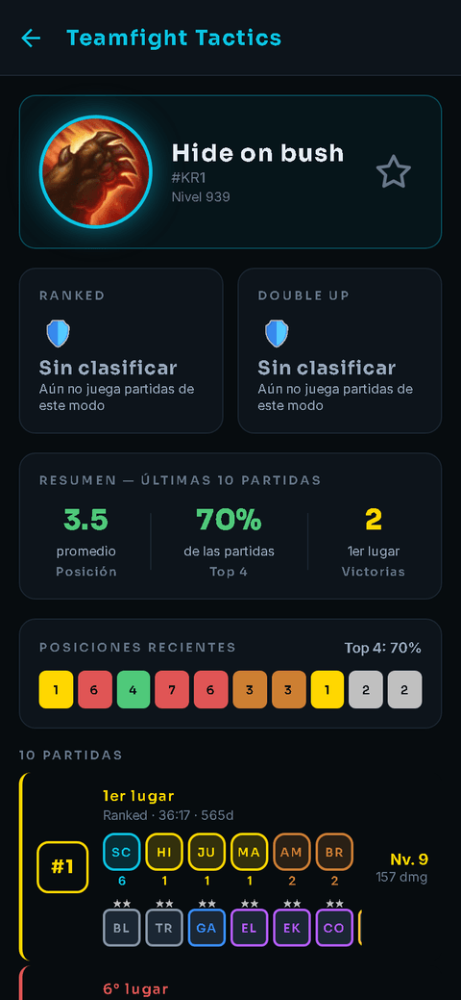
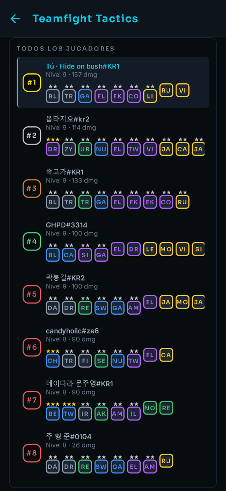
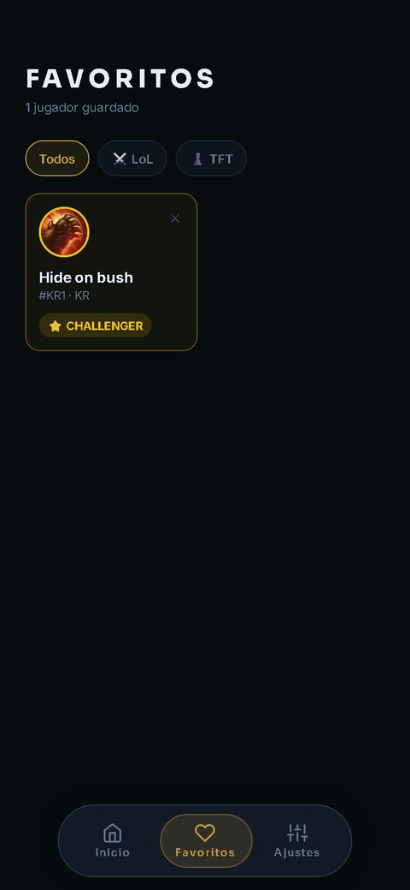

Estadísticas de League of Legends y Teamfight Tactics en una app móvil gratuita y sin anuncios.
Free, ad-free mobile stats for League of Legends and Teamfight Tactics.

Busca a cualquier jugador por su Riot ID y región y consulta su rango, sus partidas recientes y estadísticas. Guarda tus favoritos y búsquedas recientes en tu propio dispositivo. Solo usa datos públicos posteriores a la partida.
Look up any player by Riot ID and region to see their rank, recent matches and stats. Favorites and recent searches are stored on your own device. Only public, post-game data is used.






Capturas renderizadas en un navegador móvil · Screenshots rendered in a mobile browser
La app nunca contiene la API key: todas las consultas pasan por un backend propio que la guarda, valida las entradas,
limita las peticiones por IP y cachea las respuestas brevemente para minimizar llamadas.
Usa ACCOUNT-V1, SUMMONER-V4, LEAGUE-V4, MATCH-V5, TFT-SUMMONER-V1, TFT-LEAGUE-V1 y TFT-MATCH-V1, además de Data Dragon para imágenes.
The app never contains the API key: all requests go through our own backend, which holds the key server-side, validates input,
rate-limits per IP and briefly caches responses to minimize calls. It uses ACCOUNT-V1, SUMMONER-V4, LEAGUE-V4, MATCH-V5,
TFT-SUMMONER-V1, TFT-LEAGUE-V1 and TFT-MATCH-V1, plus Data Dragon for images.
Política de privacidad · Privacy policy · Código fuente · Source code · Contacto · Contact (GitHub Issues)